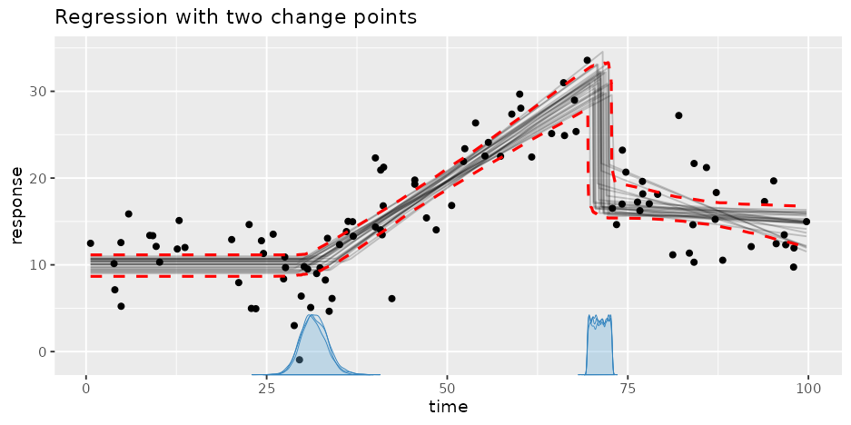
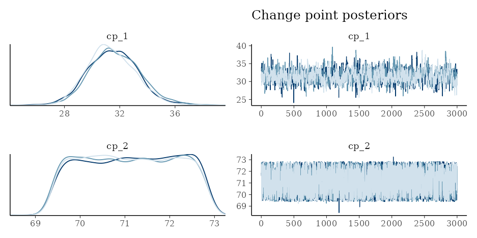
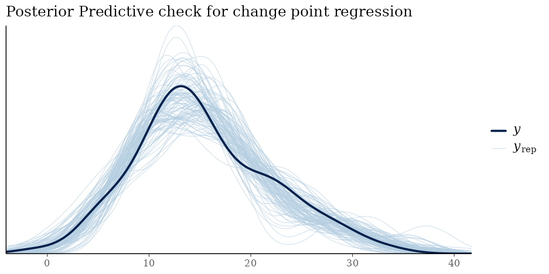

mcp does lm/glm/brms-like regression with Multiple Change Points (hence “mcp”) using Bayesian inference. mcp is especially useful if you have a priori knowledge about the number of change points and the trend of the segments in between. It supports GLMs with group-level effects (random effects), AR/MA, and regression on distributional parameters (sigma, shape, etc.).
mcp aims to feel “R-native” like lm/glm at its simplest while the more Bayesian aspects are inspired by brms and posterior. Under the hood, mcp takes a formula-representation of linear segments and turns it into JAGS code (see fit$jags_code).
mcp has 200+ academic citations across ecology, astronomy, neuroscience, epidemiology, and other disciplines. See applications in the citing literature. Still, consider if mcp is the right tool for your problem - see overview of change point packages.
Change points are also called switch points, break points, broken line regression, broken stick regression, bilinear regression, piecewise linear regression, local linear regression, segmented regression, and (performance) discontinuity models. mcp aims to be be useful for all of them.
Install
Install mcp from CRAN:
install.packages("mcp")or install the development version from GitHub:
if (!requireNamespace("remotes")) install.packages("remotes")
remotes::install_github("lindeloev/mcp")mcp uses JAGS through rjags. If installation of rjags reports that JAGS headers or libraries are missing, install JAGS 4.x and rerun the mcp installation. JAGS 5 is supported when rjags 5 is released.
At a glance
mcp takes a list of formulas - one for each segment:
model = list(
response ~ 1, # plateau (Intercept_1)
~ 0 + time, # joined slope (time_2) at cp_1
~ 1 + time # disjoined slope (Intercept_3, time_3) at cp_2
)
data = mcp_example_data("demo")
fit = mcp(model, data)The change point(s) are the x at which data changes from being better predicted by one formula to the next. The first formula is just response ~ predictors and the most common formula for segment 2+ would be ~ predictors (more details here).
You can do change point regression for a large number of models in a syntax that aligns with lm()/glm()/brms. Visit the mcp website for worked examples and tips for many of them.

Brief worked example
The following model infers the two change points between three segments. You can run this complete worked example (which fits the model and plots by default) in one line:
demo_fit = mcp_example("demo")See demo_fit$example_code for how it was generated, and explore more demos in mcp_example(). But for now, let’s walk though the example manually:
# Define the model
model = list(
response ~ 1, # plateau (Intercept_1)
~ 0 + time, # joined slope (time_2) at cp_1.
~ 1 + time # disjoined slope (Intercept_3, time_3) at cp_2
)
# Get example data and fit it: mcp(model, data, ...)
fit = mcp(model, demo_fit$data, sample = "both", seed = 40)Plot and summary
The default plot includes data, fitted lines drawn randomly from the posterior, and change point(s) posterior density for each chain. Here we also add fitted interval (q_fit):

Use summary() to summarise the posterior distribution as well as sampling diagnostics:
summary(fit)## Family: gaussian
## Links: mu = identity; sigma = identity
## Iterations: 3000 from 3 chains.
## Segments:
## 1: response ~ 1
## 2: response ~ 1 ~ 0 + time
## 3: response ~ 1 ~ 1 + time
##
## Change point parameters:
## variable mean sd lower upper rhat ess_bulk ess_tail sim match
## cp_1 30.78 3.604 23.69 38.370 1.01 426 603 30.0 OK
## cp_2 69.77 0.293 69.30 70.261 1.00 5621 7509 70.0 OK
##
## Population-level parameters:
## variable mean sd lower upper rhat ess_bulk ess_tail sim match
## Intercept_1 10.31 0.705 8.90 11.641 1.00 1436 2136 10.0 OK
## time_2 0.54 0.064 0.43 0.682 1.01 463 668 0.5 OK
## Intercept_3 0.72 1.566 -2.30 3.873 1.00 591 1134 0.0 OK
## time_3 -0.23 0.092 -0.42 -0.055 1.00 606 1109 -0.2 OK
## sigma_1 4.01 0.304 3.48 4.691 1.00 4147 3932 4.0 OK-
rhatis the rank-normalized split-Rhat convergence diagnostic. -
ess_bulkandess_tailare the effective sample sizes for the bulk and tails of the posterior. Warning thresholds can be changed withmcp(..., diagnostics = list(rhat = 1.01, ess_bulk = 400, ess_tail = 400));summary()inherits these settings. - In this case, we simulated data using
mcp(see how indemo_fit$example_code) so the columnssimandmatchshow true value and whether it was recovered.
plot_pars(fit) can be used to inspect the posteriors and convergence of all parameters. See the documentation of plot_pars() for many other plotting options. Here, we plot just the (population-level) change points. They often have “strange” posterior distributions, highlighting the need for a computational approach:
plot_pars(fit, regex_pars = "cp_") + ggtitle("Change point posteriors")
Do a posterior predictive check to see if the model recovers the empirical distribution in the data:

You can expect most generics from R, posterior, tidybayes to work on mcpfits. E.g., use fitted(fit) and predict(fit) to get fits and predictions for in-sample and out-of-sample data, use as_draws(fit) to get draws, etc.
Tests and model comparison
We can test (joint) probabilities in the model using hypothesis() (see more here). For example, what is the evidence (given priors) that the first change point (cp_1) is later than 25 against it being less than 25?
hypothesis(fit, "cp_1 > 25")## hypothesis mean lower upper p BF
## 1 cp_1 - 25 > 0 5.784828 -1.305529 13.36994 0.9443333 11.13248For model comparisons, we can fit a null model and compare the predictive performance of the two models using (approximate) leave-one-out cross-validation (see more here). Let’s specify a null model null model where the first two segments are reduced to one straight line, i.e., removing the change point:
# Define the model
model_null = list(response ~ 1 + time) # Intercept_1 and time_1
# Fit it
fit_null = mcp(model_null, demo_fit$data, seed = 42)Leveraging the power of loo::loo(), we see that the two-change-points model is preferred (it is on top), but the elpd_diff / se_diff ratio indicates that this preference is not very strong:
fit_loo = loo(fit)
fit_null_loo = loo(fit_null)
loo::loo_compare(fit_loo, fit_null_loo)Highlights from in-depth guides
The articles on the mcp website go in-depth with the functionality of mcp. Here is an executive summary, to give you a quick sense of what mcp can do.
Parameter names are
Intercept_i(intercepts),cp_i(change points),x_i(slopes),ar*/ma*(autocorrelation), andsigma_*(Gaussian residual standard deviation).The change point model is basically an
ifelsemodel with order constraints on the change points.Generate data for all supported models using
fit$simulate(). See examples in, e.g.,mcp_example("demo")$example_code.
Supported families and link functions:
mcpcurrently supports specific combinations of families (gaussian(),binomial(),bernoulli(),poisson(), andnegbinomial()) and link functions (identity,logit,probit, andlog).On using informative priors to incorporate expert knowledge.
Use
binomial(link = "logit")for binomial change points in mcp. Also relevant forbernoulli(link = "logit").Use
negbinomial(link = "log")orpoisson(link = "log"). Read more on Poisson and negative binomial change points in mcp.Get results on the linear-predictor (link) scale rather than the response scale using
plot(fit, scale = "linear")orfitted(fit, scale = "linear").
Model comparison and hypothesis testing:
Do Leave-One-Out Cross-Validation using
loo(fit)andloo::loo_compare(loo1, loo2).Compute Savage-Dickey density ratios using
hypothesis(fit, "cp_1 = 40").
Model group-level intercepts, slopes, and change points using
(1|id),(condition||id), or+(condition|id). Get posteriors usingranef(fit).Plot using
plot(fit, facet_by = "my_group")andplot_pars(fit, pars = "group", type = "dens_overlay", ncol = 3).Default priors bound group-specific change points relative to adjacent population-level change points.
Modeling autoregression and distributional parameters like Gaussian residual standard deviation:
~ 0 + sigma(1)models an intercept change in standard deviation.~ 0 + sigma(0 + x)models increasing/decreasing standard deviation. Explicitsigma()formulas use a log link, so their coefficients are on the log-SD scale.~ ar(N)models Nth order autoregression on residuals.~ar(N, 0 + x)models increasing/decreasing autocorrelation.y | weights(w)(andy | trials(N) + weights(w)) specifies observation log-likelihood weights across all families, as inbrms.You can provide complete models in distributional parameters (currently
sigma(),shape(), andmu()) and time-series (ar()andma()). For example,~ x + sigma(1 + x:condition)models an abrupt change followed by a by-condition slopes in variance.
Get fitted and predicted values and intervals:
fitted(fit)andpredict(fit)take many arguments to predict in-sample and out-of-sample values and intervals.Forecasting with prior knowledge about future change points.
See priors in
fit$priororprior_summary(fit)and set priors usingmcp(..., prior = list(cp_1 = "dnorm(0, 1)", cp_2 = "dunif(0, 45)").One change point has a uniform default prior. An ideal default prior for multiple change points is
cp_i = "dirichlet(1)"which is a simplex of equidistant beta distributions, but because it samples inefficiently, a mcp defaults to an approximation using truncated Student-t priors centered at the minimum x. Informativeness increases and the number of change points increase.Fix parameters to specific values using
cp_1 = 45and share parameters between segments usingslope_1 = "slope_2".Truncate priors using
T(lower, upper), e.g.,Intercept_1 = "dnorm(0, 1) T(0, )".mcpadds ordering bounds to population-level change-point priors. Users can override these.Do prior predictive checks using
mcp(model, data, sample = "prior") |> plot().
Missing responses and posterior imputation:
Missing responses are sampled in JAGS and retained with their matching posterior draws.
Use
fitted(fit) |> filter(is.na(y))for expected responses andpredict(fit) |> filter(is.na(y))for posterior imputations.On plotting missing responses, asking probabilistic questions about them, etc.
Speed up fitting using
future::plan(future::multisession, workers = 3), and/or fewer iterations,mcp(..., warmup = 500).Help convergence along using
mcp(..., inits = list(cp_1 = 20, Intercept_2 = -3)).Most errors will be caused by circularly defined priors.
Do more with the MCMC samples
Use the posterior package generics to extract draws in any format:
library(posterior)
library(tidybayes)
as_draws_df(fit) # draws_df (tidybayes-compatible)
as_draws_array(fit) # draws array (iterations x chains x parameters)
coda::as.mcmc(fit) # coda mcmc.list (for coda diagnostics)
spread_draws(as_draws_df(fit), cp_1, cp_2, Intercept_1) # tidybayesGet draws in a tidybayes-like format with fitted(fit, summary = FALSE) or predict(fit, summary = FALSE). Same for residuals(fit) and log_lik(fit).
For example:
## # A tibble: 6 × 14
## .chain .iteration .draw cp_1 cp_2 Intercept_1 time_2 Intercept_3 time_3
## <int> <int> <int> <dbl> <dbl> <dbl> <dbl> <dbl> <dbl>
## 1 1 1 1 33.9 69.3 10.6 0.604 -0.512 -0.171
## 2 1 1 1 33.9 69.3 10.6 0.604 -0.512 -0.171
## 3 1 1 1 33.9 69.3 10.6 0.604 -0.512 -0.171
## 4 1 1 1 33.9 69.3 10.6 0.604 -0.512 -0.171
## 5 1 1 1 33.9 69.3 10.6 0.604 -0.512 -0.171
## 6 1 1 1 33.9 69.3 10.6 0.604 -0.512 -0.171
## # ℹ 5 more variables: sigma_1 <dbl>, response <dbl>, time <dbl>,
## # data_row <int>, .epred <dbl>Citation
This preprint formally introduces mcp. Find citation info at the link, call citation("mcp") or copy-paste this into your reference manager: